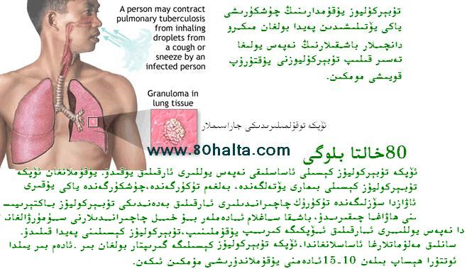

ئەسسالامۇ ئەلەيكۇم مۆھتىرەم تورداش، بلوگىمىزغا خۇش كەپسىز، قۇتلۇق قەدەملىرىڭىزگە مەرھابا!
 ناشتىلىق ھەققىدە ئىككى كەلىمە
ناشتىلىق ھەققىدە ئىككى كەلىمە
ئاپتورى:Birzat ۋاقتى:2012-10-10

جاھانغا مەشھۇر نامى پۇر كەتكەن تېۋىپ لوقمان ھەزرەتلىرىنىڭ كۈيئوغلى ناھايىتى ساغلام كىشى بولۇپ بىرەر قېتىممۇ لوقمان ھەكىمگە كېسەل كۆرسەتكىلى كەلمەپتۇ. بۇنىڭدىن ئەجەبلەنگەن لوقمان ھەكىم قىزىدىن سوراپتۇ:
- ئىرىڭ كېسەل كۆرسەتكىلى بىرەر قېتىممۇ ئالدىمغا كىلىپ باقمىدى، ئۇ تەن ساقلىقىنى ئاسراشتا ئۆزىگە قانداق سەۋەب قىلىدۇ؟
قاپاق تارتىش شۇملۇقتىنمۇ؟
ئاپتورى:Birzat ۋاقتى:2011-04-03
 ئۇيغۇر تېبابىتىدە قاپاق تارتىشنى بىر خىل كېسەللىك دەپ قارىمايدۇ. ئۇخلىغاندا دۈم ياكى شۇنىڭغا ئوخشاش نامۇۋاپىق شەكىللەردە يېتىش سەۋەپلىك نېرىپلار بىسىلىپ قىلىش، زىيادە چارچاش ، جىددىيچىلىك، ۋە ئوي-خىيالنىڭ كۆپ بولىشى قاتارلىق كەيپىياتقا پاسسىپ تەسىر كۆرسىتىدىغان ئامىللار سەۋەبلىكمۇ قاپاق تارتىشى مومكىن.
ئۇيغۇر تېبابىتىدە قاپاق تارتىشنى بىر خىل كېسەللىك دەپ قارىمايدۇ. ئۇخلىغاندا دۈم ياكى شۇنىڭغا ئوخشاش نامۇۋاپىق شەكىللەردە يېتىش سەۋەپلىك نېرىپلار بىسىلىپ قىلىش، زىيادە چارچاش ، جىددىيچىلىك، ۋە ئوي-خىيالنىڭ كۆپ بولىشى قاتارلىق كەيپىياتقا پاسسىپ تەسىر كۆرسىتىدىغان ئامىللار سەۋەبلىكمۇ قاپاق تارتىشى مومكىن.
«يۈز مىڭلىغان نىمە ئۈچۈن» دېگەن كىتابتىن بۇ ھەقتە تۆۋەندىكىدەك بايانلارنى كۆرگەن ئىدىم. كۆرۈپ باققايسىز!
كىشلەرنىڭ قاپىقى بەزىدە سەۋەبىسزلا تويۇقسىز قاتتىق تارتىپ كېتىپ ،كىشىنى ناھايىتى بىئارام قىلىدۇ. بەزىلەر «سول قاپاق تارتسا ياخشىلىقتىن ،ئوڭ قاپاق تارتىسا يامانلىقتىن دېرەك بېرىدۇ» دەپ قارايدۇ ،ئەمەلىيەتتە بۇ پۈتۈنلەي بىر خىل ....
جاھىل خاراكتېرلىك تەڭگە تەمرەتكە يۇقامدۇ؟
ئاپتورى:Birzat ۋاقتى:2011-03-26
 ئىسمىدىنلا بۇنىڭ ئاسان ساقايمايدىغان، جاھىل كېسەللىك ئىكەنلىكى چىقىپ تۇردۇ. تەڭگە تەمرەتكە تېرە كېسەللىكلىرى ئىلمى نۇقتىلىق تەتقىق قىلىدىغان كېسەللىكلەرنىڭ بىرى بولۇپ ، دۇنيادىكى ھەر قايسى دكلەتلەردە مەخسۇس مۇشۇ تۈردە تېببى تەتقىقات ئورۇنلىرى قۇرۇلۇپ خىلى زور ئادەم كۈچى ۋە مەبلەغ ئاجرىتىلىپ ئىنچىكە تەتقىق قىلىنىۋاتقان بولسىمۇ ھازىرغا قەدەر بۇ خىل كېسەللىككە دىئاگنۇز قويۇش جەھەتتە تونۇش ئىنىق بولمايۋاتىدۇ.
ئىسمىدىنلا بۇنىڭ ئاسان ساقايمايدىغان، جاھىل كېسەللىك ئىكەنلىكى چىقىپ تۇردۇ. تەڭگە تەمرەتكە تېرە كېسەللىكلىرى ئىلمى نۇقتىلىق تەتقىق قىلىدىغان كېسەللىكلەرنىڭ بىرى بولۇپ ، دۇنيادىكى ھەر قايسى دكلەتلەردە مەخسۇس مۇشۇ تۈردە تېببى تەتقىقات ئورۇنلىرى قۇرۇلۇپ خىلى زور ئادەم كۈچى ۋە مەبلەغ ئاجرىتىلىپ ئىنچىكە تەتقىق قىلىنىۋاتقان بولسىمۇ ھازىرغا قەدەر بۇ خىل كېسەللىككە دىئاگنۇز قويۇش جەھەتتە تونۇش ئىنىق بولمايۋاتىدۇ.
بۇ بۇ كېسەلنى ساقايمايدۇ دېگەنلىك ئەمەس. ئۇيغۇر تېبابىتىدە تەڭگە تەمرەتكە ( كالا تېرىسىمان تەمرەتكىمۇ دېيىلىدۇ) نى داۋالاشنىڭ ئۆزىگە خاس داۋالاش ئۇسسۇللىرى بار.
ئاستىدىن ئىسستىدىغان قۇرۇلمىلىق ئۆيلەردە يېتىش زىيانلىقمۇ؟
ئاپتورى:Birzat ۋاقتى:2011-01-20

ھېس قىلىشىمچە ئاستىدىن ئىستىدىغان قۇرۇلمىلىق ئۆيلەرنىڭ ئادەتتىكى ھاۋاسى قۇرۇق بولىدىكەن. بۇنداق زىيادە قۇرۇق ھاۋا ئادەمنى قۇرۇتۇپ كەيپىياتىنى ناچارلاشتۇرىدۇ. باشنى ئېغىرلاشتۇرۇپ گاراڭ قىلىپ قويىدۇ. ئۇزۇن مۇددەت پولنىڭ ئۈستىدىلا ياتقاندا بۆرەك مىزاجىنىمۇ قۇرۇتۇپ سالامەتلىككە بەزى بىر سەلبىي تەسىرلىرى بولىشى مومكىن. بۇ خىل تەسىرلەرنىڭ ئالدىنى ئىلىش ئۈچۈن ئاستىدىغان ئىسسىتىدىغان قۇرۇلمىلىق ئۆيلەردە ئولتۇرغۇچىلار قىش كۈنلىرى چوقۇم ئۆيدە گۈل بېقىش ئارقىلىق ئۆينىڭ ھاۋاسىنىڭ نەملىك ھالىتىنى ساقلىشى زۆرۈر. سوۋۇتۇلغان قايناقسۇ ھەر قاچان تەييار بولىشى، ئۇسساپ قالغان ھامان سۇ تولۇقلاپ تۇرىشى كېرەك. بولۇپمۇ
<<مەن قانداق قىلسام يولدۇشۇمنى ئۆزۈمگە قارىتالايمەن>>؟
ئاپتورى:Birzat ۋاقتى:2011-01-20
ئاياللار پىسخىك كەيپىياتىنى قانداق تەڭشەش كېرەك؟
ئاپتورى:Birzat ۋاقتى:2010-12-26
ئەسسالامۇ ئەلەيكۇم
ھۆرمەتلىك بىر زات ئەپەندىم ، خىزمەتنى ئىككى -ئۈچ سائەتتىن ئارتۇق بىسىپ ئىشلىسەم ۋە ئارام كۈنلىرى تاماق ئەتكەش ئۆي تازلاپ كىر قاتلارنى يۇسام دىگەندەك ئىشلار سەۋەپلىك سەللا ھارغىنلىق يەتسە ، نىرۋام ئىتتىكلەپ ، ئاسانلا چىچىلىدىغان ، تىرىكىپ يولدۇشۇمغا بەزى كۆڭۈل ئاغرىقى ئەكىلىدىغان ياكى يىغلايدىغان بولىۋالدىم .
بۇ نىرۋامنىڭ چارچىغانلىقىمۇ ؟ بۇ ئىشلار ئادەتتىكى تۇرمۇش ئىشلىرىغۇ ، مەن ئاجىزلاپ كەتتىمۇ ؟
قانداق قىلسام ئاسان چېچىلمايمەن ؟ بۇرۇن بۇنداق مىجەزىم يوقتى ، مەن ئۆيدىكىلەرگە بىسىم پەيدا قىلغىم يوق . دوختۇرغا بېرىپ چوڭ قان تومۇرۇمدىن قان ئېلىپ ، بويۇن لىنفا بەز سىتىمىسىنى甲亢 نى تەكشۇرتۇپمۇ باقتىم ، نورمال چىقتى .
ماڭا بىر يول كۆرسىتىپ بەرسىڭىز .
ئۇيقۇدىن كىيىنكى ئاستىنقى قاپاق ئىششىپ قىلىشقا قانداق چارە بار؟
ئاپتورى:Birzat ۋاقتى:2010-11-12
ئۇيقۇدىن كىيىنكى ئاستىنقى قاپاق ئىششىپ قىلىشقا قانداق چارە بار؟
ئەسسەلامۇئەلەيكۇم ، ھۆرمەتلىك بىر زات ئەپەندىم . بىر سۇئالىم بار ئىدى سوراشقا بۈگۈن پۇرسەت كەلگەن ئوخشايدۇ،مەن توي قىلغىلى بەش يىل بولدى مەن دائىملا ئۇخلاپ ئويغانغاندىن كىيىن ئاستىن قاپىغىم بەكلا ئىششپ كىتىدۇ ،چۈشتىن كىيىنلەردە ئازراق ئوڭشىلىدۇ .دىمەكچى بولغىنىم بۆرەكتە مەسىلە بولسا مۇشۇنداق بولامدۇ . بۇنىڭ سەۋەبىگە قارىتا بىرەر ياخشى دورا ياكى باشقا ئامالى بارمۇ ؟سالامەتلىگىم ھەر جەھەتتىن ياخشى بولمىسا،باشقا تىۋىپلاردىن سورىسام ئىنىق جاۋاپ يوق ،شۇنىڭ بىلەن ئۆزلىرىگە مۇراجىئەت قىلىشىم نائۈمىت قويمىغايلا:
جاۋاپ:
جاھىل خارەكتىرلىك تەڭگە تەمرەتكە يۇقامدۇ، ساقىيىش نىسبىتى قانچىلىك؟
ئاپتورى:Birzat ۋاقتى:2010-10-10
 تەڭگە تەمرەتكە تېرە كېسەللىكلىرى ئىلمى نۇقتىلىق تەتقىق قىلىدىغان كېسەللىكلەرنىڭ بىرى بولۇپ ، دۇنيادىكى ھەر قايسى دۆلەتلەردە مەخسۇس مۇشۇ تۈردە تېببى تەتقىقات ئورۇنلىرى قۇرۇلۇپ خىلى زور ئادەم كۈچى ۋە مەبلەغ ئاجرىتىلىپ ئىنچىكە تەتقىق قىلىنىۋاتقان بولسىمۇ ھازىرغا قەدەر بۇ خىل كېسەللىككە دىئاگنۇز قويۇش جەھەتتە تونۇش ئىنىق بولمايۋاتىدۇ.
تەڭگە تەمرەتكە تېرە كېسەللىكلىرى ئىلمى نۇقتىلىق تەتقىق قىلىدىغان كېسەللىكلەرنىڭ بىرى بولۇپ ، دۇنيادىكى ھەر قايسى دۆلەتلەردە مەخسۇس مۇشۇ تۈردە تېببى تەتقىقات ئورۇنلىرى قۇرۇلۇپ خىلى زور ئادەم كۈچى ۋە مەبلەغ ئاجرىتىلىپ ئىنچىكە تەتقىق قىلىنىۋاتقان بولسىمۇ ھازىرغا قەدەر بۇ خىل كېسەللىككە دىئاگنۇز قويۇش جەھەتتە تونۇش ئىنىق بولمايۋاتىدۇ.
بۇ - بۇ كېسەلنى ساقايمايدۇ دېگەنلىك ئەمەس. ئۇيغۇر تېبابىتىدە تەڭگە تەمرەتكە ( كالا تېرىسىمان تەمرەتكىمۇ دېيىلىدۇ) نى داۋالاشنىڭ ئۆزىگە خاس داۋالاش ئۇسسۇللىرى بار.
كېچىسى سىيىپ يېتىشقا شىپالىق ئاددىي رېتسىپلار (سىناقتىن ئۆتكەن )
ئاپتورى:Birzat ۋاقتى:2010-10-07

ئۇ بەك كىچىك ۋاقتىدىن باشلاپلا كېچىسى يوتقانغا سىيىپ قويىدىغان ئادىتى بار ئىدى. ھەم كۈندە شۇنداق بولاتتى. دەسلەپتە ئائىلدىكىلەر كىچىك بالا ئۈچۈن بۇ نورمال ئەھۋال دەپ بىلىپ سەۋەپ قىلىپ باقماپتىمىز. لىكىن ،ھازىر 12 ياشقا كىرىپ قالغان بولسىمۇ بۇ ئادەت يەنىلا داۋاملىشىپ كىلۋاتىدۇ. قىززىق يىرى ، ئىنىمنىڭ كۈندۈزى تەرەت كونترول قىلىشى نورمال، پەقەتلا كېچىسى ئۇخلىغاندا تۇتالمايدۇ. بۇ ئەيىبلىك بىچارىنىڭ كۆڭلى بەك سولغۇن، ياخشى كۆرگەن ئۆيلەردە كىچىسى قۇنۇپ قالالمايدۇ، قالسىمۇ ئەتىسى ئىزاغا قالىدۇ. چوڭ بولغانسىرى بۇ ئەيىپ ئۇنىڭ پىسخىكىسغا تەسىر كۆرسىتىپ بارغانسىرى جىمغۇر بولۇپ قېلۋاتىدۇ.
نېرۋا ئاجىزلىقتىن بولغان باش ئاغرىش a Nervous Breakdown and Headache
ئاپتورى:Birzat ۋاقتى:2010-09-02

تۆت يىل بولدى بېشىم ئاغرىيدۇ . ئىككىنجى دوختۇرخانىدا CT ئاپاراتىدا تەكشۈرتسەم چاتاق يوق ئىكەن. دوختۇرنىڭ دىيىشچە نېرۋام زەئىپلىشىپ كەتكەنلىكتىن كىلىپ چىققان كېسەل ئىكەن . دېمىسىمۇ ئۆزۈم قاتتىق ئاچچىقلانسام ، بىرەر ئىش كاللامغا بەك تەسىر قىلسا ياكى بىرەر ئىشنى بەك ئويلۇنۇپ كەتسەم ئاغرىپ كېتىدۇ. كىشلىك تۇرمۇشتا خاپلىقتىن خالى بولغىلى بولمايدىكەن ، كەسپىم سىرچىلىق، كۈندە ئەتىگىنى ئۇيقىدىن ئويغانسام بېشىم بەك ئاغرىيدۇ ، كېچىچە چۈش كۆرۈپ چىقىمەن ، مىنىڭ بۇ كىسلىمگە مەسلىھەت بەرسىڭىز !
خەتكۈش: نېرۋا ئاجىزلىقتىن بولغان باش ئاغرىش a Nervous Breakdown and Headache
باھ قۇۋۋەتلىگۈچى ئۇيغۇر تىبابەت دورىلىرى خۇمار قىلامدۇAdicted to Drugs
ئاپتورى:Birzat ۋاقتى:2010-08-24
مەن شۇ گەپنى سورماقچى: جىنسى ھەۋەسنى قوزغاتقۇچى (غەرب دورىلىرى) بىلەن جىنسى ھەۋەسنى قوزغاتقۇچى ،باھنى قۇۋۋەتلىگۈچى ئۇيغۇر تىبابەت دورىلىرىنىڭ پەرقى بارمۇ ؟ غەرب دورىلىرىنى يىسە خۇمار بۇلۇپ قالىدۇ كىيىنچە شۇنى يىمىسە كارغا كەلمەيدۇ دەيدىكەن ،ئۇنداقتا ئۇيغۇر تىبابەت دورىلرىنى يىسە يەنە شۇنداق قىلامدۇ؟(خۇمار قىلامدۇ)
خەتكۈش: باھ
قۇلاق ياللۇقىنى ئۇيغۇر تېبابىتىدە قانداق داۋالاش مومكىن؟
ئاپتورى:Birzat ۋاقتى:2010-08-12
 مەن چوڭ ئانامنىڭ قۇلاق غۇڭۇلداپ ئاغرىۋاتقانلقىغا دوختۇرلاردىن ئامال-چارە ئىزلەپ كىرگەن ئىدىم.
مەن چوڭ ئانامنىڭ قۇلاق غۇڭۇلداپ ئاغرىۋاتقانلقىغا دوختۇرلاردىن ئامال-چارە ئىزلەپ كىرگەن ئىدىم.
قانداق قىلساق ياخشى ئامالى بۇلار؟ئوتتۇرا قۇلاق ياللۇغى دەپ دىئاگونۇز قويغان.ئاسما ئۇكۇل قويساقمۇ پەرىقى بولمىدى؟قۇلاقنى قىچىشىپ كولاتقان بىلەنلا بۇ كىسەل پەيدا بۇلۇپ چوڭ ئانامنى ئازابلاۋاتىدۇ،مەن چىداپ بۇلالماي مەسلىەت سوراپ باققۇم كەلدى.رەنجىمەي قانائەتلەنگىدەك جاۋاب بىرىشىڭلارنى تۇۋەنچىلىك بىلەن سورايمەن!كۆك كەپتەر گۇشى يىسە مەنپەئەت قىلارمۇ؟>
خەتكۈش: قۇلاق
نېمە ئۈچۈن يېڭىدىن بېزەلگەن ئۆيگە دەرھال كۆچۈپ كىرىشكە بولمايدۇ؟
ئاپتورى:Birzat ۋاقتى:2010-08-07
تۇرمۇشتا يېڭى ئۆيگە كۆچۈش خۇشاللىنارلىق ئىش. لېكىن يېڭى ئۆيگە كۆچۈپ كىرگەندىن كېيىن، بەزى كىشىلەردە باش قېيىش، باش ئاغرىش، ماڭقىسى ئېقىش، بۇرنى ئېتىلىپ قېلىش، گېلى ئاغرىش، دېمى سىقىلىش قاتارلىق كېسەللىك ئالامەتلىرى كۆرۈلىدۇ. بۇ قاندق ئىش؟ ئەسلىدە، ھازىر ئىشلىتىلىۋاتقان قۇرۇلۇش ماتېرىياللىرى ۋە ئۆي ئىچىنى بېزەش ماتېرىياللىرى ئىچىدە بەزى زەھەرلىك ماددىلار ۋە رادىئوئاكتىپلىق ماددىلار بار، ئۇلار ئادەم بەدىنىنى زەھەرلەش رولىنى ئوينايدۇ.
ئۇيقۇدىن كىيىنكى ئاستىنقى قاپاق ئىششىپ قىلىشقا قانداق چارە بار؟
ئاپتورى:Birzat ۋاقتى:2010-08-07

ئەسسالامۇ ئەلەيكۇم ، ھۆرمەتلىك بىر زات ئەپەندىم . بىر سۇئالىم بار ئىدى سوراشقا بۈگۈن پۇرسەت كەلگەن ئوخشايدۇ،مەن توي قىلغىلى بەش يىل بولدى مەن دائىملا ئۇخلاپ ئويغانغاندىن كىيىن ئاستىن قاپىغىم بەكلا ئىششپ كىتىدۇ ،چۈشتىن كىيىنلەردە ئازراق ئوڭشىلىدۇ .دىمەكچى بولغىنىم بۆرەكتە مەسىلە بولسا مۇشۇنداق بولامدۇ . بۇنىڭ سەۋەبىگە قارىتا بىرەر ياخشى دورا ياكى باشقا ئامالى بارمۇ ؟سالامەتلىگىم ھەر جەھەتتىن ياخشى بولمىسا،باشقا تىۋىپلاردىن سورىسام ئىنىق جاۋاپ يوق ،شۇنىڭ بىلەن ئۆزلىرىگە مۇراجىئەت قىلىشىم نائۈمىت قويمىغايلا !!!
خەتكۈش: قاپاق
ھامىلدارلىق مەزگىلىدە سېزىكلىك ئالامەتلىرى كۆرۇلمەيدىغان ئەھۋاللارمۇ ب
ئاپتورى:Birzat ۋاقتى:2010-08-07
 ئادەتتە ئاياللاردا ھامىلدارلىق مەزگىلىدە سېزىكلىك ئالامەتلىرى كۆرۇلمەيدىغان ئەھۋاللارمۇ بولامدۇ؟
ئادەتتە ئاياللاردا ھامىلدارلىق مەزگىلىدە سېزىكلىك ئالامەتلىرى كۆرۇلمەيدىغان ئەھۋاللارمۇ بولامدۇ؟
توي قىلغىنىمغا 2يىل بولدى،ھەيىز كەلمىگىلى 6 ئاي بولدى. بىراق مەندە ھامىلدارلىقنىڭ ئالامىتى كۆرۇلمىدى،
سىزنىڭچە بۇ ئەھۋال كېسەللىكنىڭ ئالامىتىمۇ ؟ ئېغىر كۆرمەي ماڭا بىر جاۋاپ بەرگەن بولسىڭىز؟
ئاللاھ ئەجرىڭىزنى بېرەر.
خەتكۈش: سېزىك
ئىدىيەمدىكى قالايمىقانچىلىق ۋە قاراڭغۇلۇقتىن قۇتۇلالايمەنمۇ؟
ئاپتورى:Birzat ۋاقتى:2010-08-01
مىنىڭ پىسخىكامدا يۈز بىرىۋاتقان ئالامەتلەر ،ئاسان ئاچچىقلىنىش ، دىققىتىنى يىغالماسلىق(ئەگەر پىكىرىم بىر خىيالغا مەركەزلىشىپ كەتسە خىيالدىن ئۆزۈمنى تارتىپ چىقىرىشىم تەس ، بەزىدە ئەتراپىمدىكىلەر بىر نەچچە قېتىم توۋلىسىمۇ ئەتراپىمدا قۇلىغىمغا كىرمەيدۇ)،كەيپىياتىم تۇراقسىز (تۇرۇپ بەزى ئىشلاردىن ئۈمىدسىزلىنىپ كىتىمەن ، تۇرۇپ بەزى ئىشلاردىن ئىلھاملىنىپ كىتىمەن) ...
مەن ئۈزۈمدىكى بۇقاتار بەزى پېسخىكىلىق نورمالسىزلىقلارنى تۆۋەندىكى بىرنەچچە خىل سەۋەبلەر تۈپەيلىدىنمىكىن دەيمەن . ئۇلار تۆۋەندىكىچە :
1. مەن كىچىك ۋاقتىمدىن تارتىپ كىتاپ ئوقۇشنى ياخشى كۆرەتتىم . شۇ تەرىقىدە يېشىمنىڭ چوڭىيىشىغا ئەگىشىپ ، ئۇقۇىغان كىتاپلىرىمنىڭ مەزمۇن دائىرىسىمۇ كېڭىيىشىگە باشلىدى . قوبۇل قىلغان نەرسىلىرىم مىنىڭ چۈشىنىش دائىرەمدىن ھالقىپ كەتكەن نەرسىلەر بولغاچقىمۇ،كۆتۈرۈش ئىقتىدارىمدىن ئارتىپ كەتكەن تۈپەيلى كاللامدا بىرقاتار بېسىملار پەيدا بۇلۇپ مۇشۇنداق ئۆزگىرىشلەرنى پەيدا قىلغانمىكىن دەيدىغان گۇمانىم بار .
2.مەن 16 ياشقا كىرگەندە كەيىپ قىلغۇچى چىكىملىك ۋە ئىچىملىكلەرگە ئۈگىنىپ قالغان ئىدىم . ئۇ ئىشلارنى بىر يىل داۋاملاشتۇردۇم . ئاللاھقا تەشەككۇر ئۆزۈمنى ھازىر قالايمىغان ئىشلاردىن يىغىۋالدىم . ئەمدى يېڭىدىن ھايات يۇلىغا قەدەم ئېلىش ئالدىدا تۇرماقتىمەن !
ئۇ نەرسىلەرنى تاشلىغاندىن كىيىن ، مىجەزىمدە چۇسلۇق ، تەتۈرلۈك كۈچىيىشكە باشلاپ ئائىلەم ۋە باشقىلارغا تەسىرى ئېغىر بۇلماقتا .
سىزدىن سورايدىغان ياردىمىم ، قانداق قىلسام ئۆزۈمنى يورۇق دۇنياغا ئېلىپ چىقىپ ، ھازىرقى ئىدىيەمدىكى قالايمىقانچىلىق ۋە قاراڭغۇلۇقتىن قۇتۇلالايمەن . بىلىش دائىرىڭىزنىڭ يىتىشىچە ماڭا مەسلەھەت بەرسىڭىز بىرزات ئەپەندىم ! ئاللاھ رەھمەت قىلسۇن !
ئاشپەز-ناۋايلاردا نېمە سەۋەبتىن ئاسانلا بۆرەك ئاجىزلاش كىلىپ چىقىدۇ
ئاپتورى:Birzat ۋاقتى:2010-07-16

ھۆرمەتلىك بىرزات ھەكىم ياخشىمۇسىز؟ مەن ئۆزەم توغۇرلۇق مەسلىھەت سورىماقچى ئىدىم. مەن ھەركۈنى بەش-ئالتە تونۇ نان ياقىمەن. مەندىن نۇرغۇن تەر چىقىپ كىتىدۇ، مۇشۇنداق بولىۋەرسە سالامەتلىكىمگە زىيانلىكمۇ؟ مىنىڭ تامىقىم بەكلا ئاز ئۇيقۇم كەپلا تۇرىدۇ . بىلىم تىلىپ ئاغرىدۇ .مۇشۇ توغۇرلۇق مەسلىھەت بەرگەن بولسىڭىز. اللا تىنىڭزنى سالامەت، ئىلمىڭىزنى زىيادە قىلغاي . اللاھقا ئامانەت.
بۇ ھەقتە تورداشلارنىڭ قالدۇرغان ئىنكاسلىرى:
مەن خامۇشمۇ؟ [سۇئال-جاۋابلار]
ئاپتورى:Birzat ۋاقتى:2010-07-13
ئۇزۇن بولدى مەندە بىرخىل ئالامەت بار، يەنى بۇرۇنقى ئازابلىق ئىشلار كاللامغا كىرىۋېىلپ كۆڭلۈم ناھايتى يېرىم بولىدىغان ھەم قاتتىق تىت-تىت بوپ كېتىدىغان، كىمدۇر بىرسى بىلەن تىللاشقۇم ھەم ئۇرۇشقۇم، يەنە كىمدۇر بىرسىنى ئۆلتۈرگۈملا كەپ تۇرىدىغان ، ئۆلتۈرگۈم دېسەم باشقىچە ئويلىماڭلار، ئادەم ئۆلتۈرسە ھەم ئۆزىنى ئۆلتۈرىۋالسا بەك يامان بولىدىغانلىقىنى بىلىمەن، ئەگەر ئېغىر گۇناھ بولمىغان بولسا بەزى ۋاقتتا راستىنلا ئادەم ئۆلتۈرۈپ قويىشىم مۇمكىن ئىدى . بۇ ئالامەتلەرنىڭ دەسلەپكى مەزگىلىدە نورمال دەپ ئويلىغان ، چۈنكى مەن ئېغىر زەربىگە ئۇچرىغان ، زەربە ئەمەس، ھېچ ئىش ئەمەس دەپ ئويلاي دېسەممۇ ئۇ زەربە ھەم ھېچ ئىش بولغانلىقتىن ئۆزەمنى ئالداپ بولالماي ، بۇنداق بولىشى تەبئىي ، ۋاقت ئۆتسە ئوڭشىلىپ قالارمەن دەپ چىداپ ئۆتتۈم .
خەتكۈش: پىسخولوگ
تېبابەتتە سۆڭەك چوڭايتىدىغان دورا بارمۇ؟ [سۇئال-جاۋابلار]
ئاپتورى:Birzat ۋاقتى:2010-07-12
ئۆپكە تېبىركوليۇز بىمارلىرى كېسەلدىن ساقايغىچە توي قىلسا بولمامدۇ؟
ئاپتورى:Birzat ۋاقتى:2010-07-10

ئەسسالامۇ ئەلەيكۈم ، مەن 7-ئاينىڭ ئاخىرىدا قان تۈكۈرۈش، نەپەس ئالسام مەيدەم ئاغرىش سەۋەبىدىن ،دوختۇرخانىغا بىرىپ تەكشۈرتكەن ئىدىم ،دوختۇر ئۆپكە تىبىركىلىيۇزنىڭ دەسلەپكى باسقۇچى ئىكەنلىكىنى ئىيتتى ، 45كۈندەك بولدى دوختۇرخانىنىڭ مەخسۇس شۇنىىڭغا قارىتا چىقارغان ھەقسىز دورىسىنى ئىچىۋاتىمەن، مەن ئىچىۋاتقان دورا جىگەرگە بەك زىيان قىلىدىكەن
خەتكۈش: تۇبوركوليۇز
كۆپ ئۇخلايدىغان بولۇپ قىلىشنىڭ سەۋەبى نېمە؟ [سۇئال-جاۋابلار]
ئاپتورى:Birzat ۋاقتى:2010-07-07
خەتكۈش: ئۇيقۇ
سېمىرىشنىڭ قانداق ياخشى چارىلىرى بار؟
ئاپتورى:Birzat ۋاقتى:2010-07-01

ياخشىمۇ سىز بىرزات ئەپەندىم...يەنە سىزنى ئاۋارە قىلىدىغان بولدۇم ..مەن بۇ يىل 27 ياشقا كىردىم. بەدەن ئېغىرلىقىم 42 كىلو..يەنى مېن بەك ئورۇق..ئورۇقلۇق بىر خىل كىسەلىك مۇ؟ قانداق قىلسام سەمەرگىلى بولىدۇ...؟ .مەسلىھەت بەرگەن بولسىڭىز...
جاۋابىڭىزنى ئىنتىزارلىق بىلەن كۈتىمەن....
ئەجىرىڭىزگە ئاللاھ بەرىكەت بەرسۇن..
ئۆپكە سىلى (تۇبېركوليۇزى ) نى داۋالاش ھەققىدە [سۇئال-جاۋابلار]
ئاپتورى:Birzat ۋاقتى:2010-06-30

سۇئال: ياخشىمۇ سىز ؟مىنىڭ ئانامنڭ سىڭلىسى ئۆپكە توبىركليۇز كىسەللىكىگە گىرىپتار بولغىنىغا 10يىل ئەتراپىدا بۇلۇپ قالدى.گەرچە نۇرغۇن داۋالانغان بولسىمۇ لىكىن قەتئى ياخشىلانمىدى،ئۆزى تېخى ياش،ئىككى ئوغلى بار،ئۇلار تېخى كىچىك ،ئۆزلىرى بولسا دېخان، شۇڭا بىر زات ئەپەندىنىڭ شۇ ئككى نارىسىدىنىڭ يۇزىسىدىن بولسىمۇ ئۈنۈملۇك بىرەر داۋالاش ئۇسۇللىرى ھەققىدە مەسلىھەت بەرگەن بولسىڭىز .
خەتكۈش: ئۆپكە سىل، تېبوركوليۇز
« جىنسي كۈچەيتكۈچ » تۈردىكى روھلاندۇرغۇچى دورىلارنى ئىستىمال قىلغان شا
ئاپتورى:Birzat ۋاقتى:2010-06-29
سۇئال: مەن توي قىلىپ بىر مەزگىل ئامىركىنىڭ ۋېيگې (قاۋۇل ئاكا) دېگەن جىنسى ھورمۇنلۇق دورىسىنى يەپ ئايالىم بىلەن بىرگە بولاتتىم. يېقىندا ئايالىم ھامىلدار بولۇپ قالدى...مەسىلىھەت بەرسىڭىز بۇخىل ۋېگې دېگەن دورنىڭ بىرەر يامان تەسىرى بولارمۇ؟! پەرزىمچە دورانى يەپ 10كۈندىن كېيىنكى ۋاقىتتا قوساقتا قالغانلىقى ئېھتىمال...
سىزنى ئاۋارە قىلىدىغان بولدۇم.
جاۋاب:
خەتكۈش: ۋىيگې
جىنسي ھەۋەسنى قوزغاتقۇچى ساغلاملىق بويۇملىرى نامىدىكى دورىلارنى ئىشلىت
ئاپتورى:Birzat ۋاقتى:2010-06-28
ياخشىمۇ سىز ~! ماڭا قولدا لەززەتلىنىشگە كۆنۆپ قالىغىلى يەتتە يىلىدىن ئاشقاندى،،يىقندا توي قىلدىم ...
ھەرقىتىم ئايالىم بىلەن جىنىسى مۇناسىۋەت قىلغاندا مىنۇتقا بارمىغان ۋاقىت ئىچىدە مەنى چىقىپ كىتىدۇ دە توختاپ قالىمەن ...لىكىن ئايالىمىنىڭ بىرەر قىتىممۇ ھسىياتى كەلگۇدەك مۇناسۋەت قىپ باقماپىتىمىز ...
خەتكۈش: جىنسىي، ساغلاملىق،
تاقىرباش ھەم ئاق چاچ ھەققىدە سورالغان سۇئاللار [سۇئال-جاۋابلار]
ئاپتورى:Birzat ۋاقتى:2010-06-28
كۈنمىڭنىڭ قەيەرىدە ئۇيغۇرچە ئاشخانا بار؟
ئاپتورى:Birzat ۋاقتى:2010-06-27
چايان چېقىۋالغاندا قانداق ئامال قىلسا بولىدۇ؟
ئاپتورى:Birzat ۋاقتى:2010-06-25

ئۆپكە تېبىركوليۇز بىمارلىرى كېسەلدىن ساقايغىچە توي قىلسا بولمامدۇ؟
ئاپتورى:Birzat ۋاقتى:2010-06-24
قانداق قىلغاندا كۆرۈش قۇۋىتىنى ياخشىلىغىلى بۇلىدۇ؟ [سۇئال-جاۋابلار]
ئاپتورى:Birzat ۋاقتى:2010-06-23

تورغا كۆپ كىرىدىغانلارنىڭ ئاھۇ-پەريادى [سۇئال-جاۋابلار]
ئاپتورى:Birzat ۋاقتى:2010-06-15

سىلىگە دېسەم ئۇ ياخشى ئادەتلىرىمنى يېقىندىن بىرى يەنە سەل قاراپ ( مۇشۇ تور بەتنى ئاچقاندىكىن چىدىماي بولمىدى دە ھى ھى ھى..) كومپيۇتېر ئالدىدا بەك ئىشلەپ كېتىۋاتىمەن. شۇنىڭ بىلەن تولا چۈش كۆرىدىغان، ئۇيقۇغا قانمايدىغان، چۈشۈمدىمۇ مەندىن بىر كىم تېببى مەسلەھەت سوراپ دېگەندەك شۇنچە كۆپ چۈشلەرنى كۆرۈپ ئۇيقۇمنىڭ سۈپىتى ياخشى بولمايۋاتىدۇ.
ئۆتكەندە 7-8 كۈن سەيلى ساياھەت بىلەن كومپيۇتېر ئالدىدا ئولتۇرماپتىم، بەدەنلىرىم باشقىچە يەڭگىللىشىپ، ھېس-تۇيغۇلىرىم شوخلىشىپ ، ئۇخلاپ قوپسام راۋۇرۇس ھاردۇقۇم چىقىدىغان بولۇپ زېھنىم تېتىكلىشىپ كەتكەن ئىدى.
ئايالىم كۆزنىڭ ئاستى نېمىشقا قارىداپ قالىدۇ دەپ سورىغاندا << ئانانىزىم >> قىلسا ياكى ئەر-خوتۇنچىلىق مۇناسىۋەتكە ئۆزىنى بەك ئۇرۇۋەتسە شۇنداق بولۇپ قالىدۇ دەپ جاۋاب بەرگەن ئىدىم.
قايسى كۈنى دۇككاندا خىلى كەچكىچە كومپۇتېردا ئىشلەپ چارچاپ ئۆيگە قايتسام ئايالىم كۆزۈمنىڭ ئاستىغا سىنچىلەپ قاراپ يىغلاپ كەتتى. ھا ھا ھا دېققەت قىلىلى ماقىما!
قارىشىمچە ئۇيغۇر تېبابەت نەزىريىسى بويچە ئېيتساق مۇشۇ جېسمى سۇلياۋ بىلەن تۆمۈردىن پۈتۈلگەن كومپيۇتېر دېگەن << بۇدۇشقاق >> نىڭ تەبئىتى << ئۆتكۈر دەرىجىدە سوغۇق >> بولۇپ بەدەندىكى قۇۋۋەتنى يالماۋۇزدەك شورايدۇ. كاۋاپ ، گۆش-پولۇلار بىلەن خىلى بەك قۇۋۋەتلىك غىزالانسىڭىزمۇ جېسمىڭىزدا ئەتتىگىنى زاغرا ناندا چاي ئىچىپ كەچكىچە ئېتىزدىن كىرمەيدىغان دېھقانلىرىمىزچىلىك قۇۋۋەتلىك ئەمەسمىز.
خەتكۈش: كومپيۇتېر، تور
ب تېپلىق جېگەر ياللۇقىنى ئۇيغۇر تېبابىتىدە داۋالىغىلى بولامدۇ؟
ئاپتورى:Birzat ۋاقتى:2010-06-14
سوغۇق ئەڭگىز بىلەن كالتىسىي كەملىك ئوخشاش گەپمۇ؟
ئاپتورى:Birzat ۋاقتى:2010-06-13
ئەمدى ئاساسلىق گەپكە كەلسەك كۆپ تەرلەش ، پەي تارتىپ قىلىش، بەل-پۇت، قول، مۈرە تېلىپ ئاغرىش، ھەزىم سىستېمىسى ياخشى بولماسلىق، ئەر-ئاياللاردىكى جىنسىي قۇۋۋەتنىڭ ئاجىزلاپ قىلىشى، سۆڭەك شالاڭشىش قاتارلىق ئالامەتلەرنى ئۇيغۇر تېبابىتىمىزدە ياكى خەلق تېلىمىزدا << سوغۇقتىن بولغان ساقسىزلىق >>، ياكى << سوغۇق ئەڭگىزنىڭ ئىشىپ كېتىشى >> دىن بولغان دەپ قاراپ ئىسسىقلىقى يۇقۇرى، قۇۋۋەتلىك غىزالارنى ئىستىمال قىلىشنى بۇيرۇش بىلەن بىرگە دورىلاردىن << ماددىتىل ھايات >> نى يەپ بىرىشنى تەۋسىيە قىلىدۇ.
خەتكۈش: كالتىسىسي، سوغۇق، ئەڭگىز
بەل-پۇت سوغۇق تۇرۇشنى داۋالاشنىڭ قانداق چارىسى بار [سۇئال-جاۋابلار]
ئاپتورى:Birzat ۋاقتى:2010-06-12
( بولسا يېزىدا تۇققانلار بولسا بىرىپ ئورما ئىلىشىغا ھەم كۈزلۈك يېغىنغىچە ئېتىزدا ئىشلىشىپ بەرسىلىرى ساقىيىپ قالاتتىكەنلا ).
تۈرۈكچە بىلىدىغانلار ياردەم قىلغان بولساڭلار (سۇئال-جاۋابلار)
ئاپتورى:Birzat ۋاقتى:2010-06-06

migren
Halk arasında yarım baş ağrısı diye bilinen ve soğuk bir terleme ile birlikte gelip, başın ve yüzün yarısını kaplayan özel bir baş ağrısıdır. Ağrılar bazen dayanılmayacak kadar şiddetli olur. Birkaç dakika sürebileceği gibi saatlerce hatta günlerce devam eder. migren, herhangi bir hastalığın belirtisi olabildiği gibi, belirli bir neden olmadan da görülebilir.